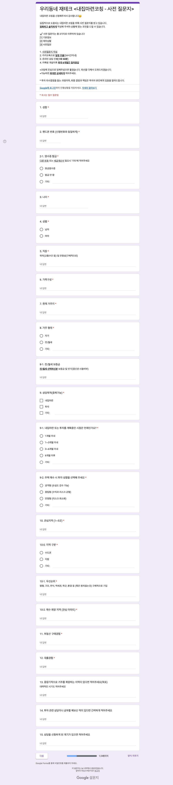
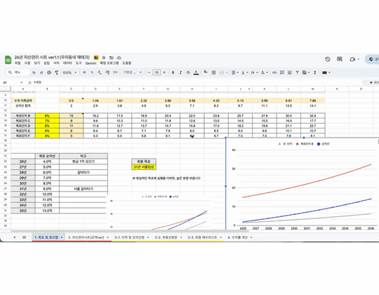

어디에
집을
살까요?
서울·경기·인천부터 광역시·중소도시까지,
내 예산에 맞는 동네와 아파트를 알려드립니다.
수도권
광역시·인구 30만↑ 도시
코칭 내용
코칭은 이렇게 진행됩니다
예산·대출부터 매매 방법, 지역·단지 선정, 협상·계약, 입주와
이후 로드맵까지 한 번에 정리해드립니다.
현재 내 상황을 객관적으로 분석합니다.
예산, 대출, 관심 지역, 매수 시점 등 사전 질문지를 통해 체계적으로 점검합니다.

사전 질문지
지금 뭘 해야 할지 단계별로 정리해드립니다.
예산 및 대출, 후보 단지, 매수 판단 등 내 상황에 맞춰 함께 정리합니다. 막연했던 고민이 명확한 결론으로 바뀝니다.
실제 매수부터 대출, 입주까지 구체적인 가이드를 제공합니다.
코칭에서 정리한 내용을 본인 데이터로 채워서 자료로 전달드립니다. 매수 판단부터 매월 자산·시세 트래킹까지 스스로 실행할 수 있는 가이드가 포함됩니다.

제공자료 일부
매수 이후 자산을 키우는 방법까지 알려드립니다.
자산 축적 → 상급지 갈아타기 전략을 같이 짭니다. 상담 후 최대 6개월 카톡으로 막힐 때마다 답해드립니다.
Follow-up Care
코칭이 끝나도,
잊지 않고 챙겨드립니다
상담 후 3·30·90·180일에 진행 점검 메시지가 자동으로 가고, 그 사이엔 언제든 카톡으로 질문을 이어갈 수 있습니다.
상담 후 3일
상담 후 30일
상담 후 90일
막연했던 고민이 판단 기준으로 바뀝니다
정확한 현황 파악부터 내 집 마련 이후 전략까지, 코칭 후 3개월(후기 작성 시 6개월) 동안 카톡으로 질문을 이어갈 수 있습니다.